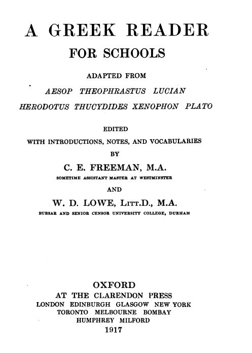

A Greek Reader for Schools
by C.E. Freeman and
W.D. Lowe
Oxford, 1917

Aesop's Fables
The Rooster and the Robbers
The Tortoise and it's Home
The Cry of "Wolf"
The Fox and the Goat
The Dancing Apes
The Ape and the Dolphin
The Father and the Son
The Lion and the Dolphin
Theophrastus's Moral Characters
The Flatterer
The Grumbler
The Distrustful